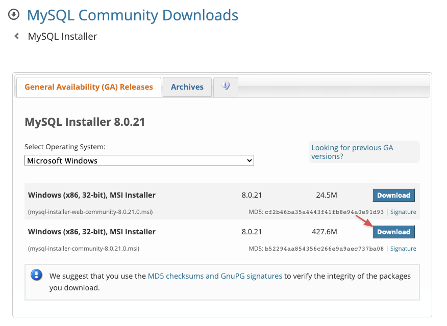
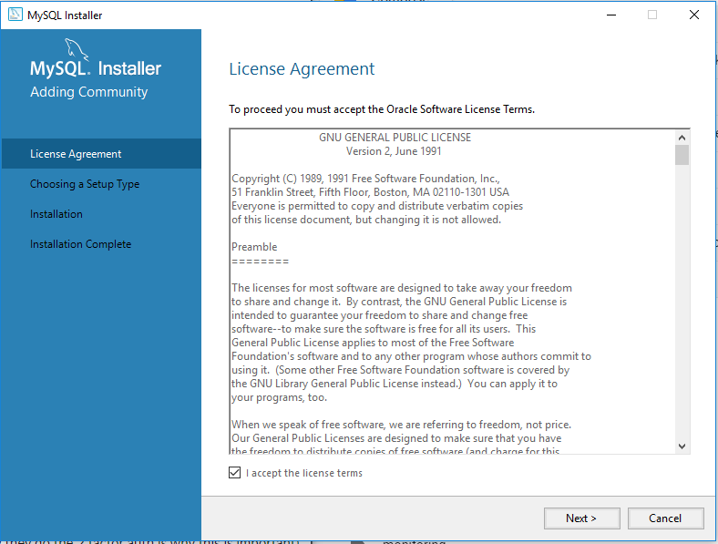
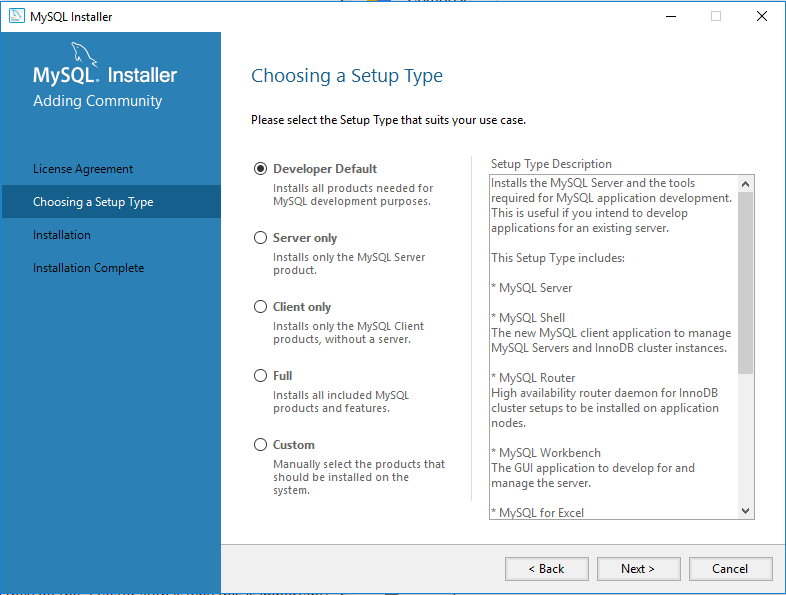

Si vous souhaitez par contre, pour un projet spécifique, changer votre nom d’utilisateur, vous devrez repasser cette
ligne mais sans le --global.
Afin de vérifier que vos paramètres aient bien été pris en compte, et vérifier les autres paramètres, il suffit de
passer la commande
git config --list
Il est recommandé d’activer les couleurs afin d’améliorer la lisibilité des différentes branches.
Pour cela, passez ces trois lignes dans Git Bash :
$ git config --global color.diff auto
$ git config --global color.status auto
$ git config --global color.branch auto
My SQL
Je vous conseille de télécharger le deuxième programme (la version “community”),
qui dispose d’options supplémentaires par rapport au premier (la version “web”).

Écran d'installation MySQL
Une fois le programme téléchargé, lancez-le en double-cliquant dessus ; vous devriez arriver sur cette fenêtre :

Fenêtre d'acceptation des conditions générales
Sur l’écran suivant, on vous demandera de faire un choix.
Sélectionnez “Developer Default” pour installer MySQL dans son entièreté.

Sélection du paramétrage par défaut
Les autres options sont utiles si vous utilisez MySQL via un outil externe,
ou que vous avez déjà votre base de données.
Cliquez ensuite sur Suivant.
Une fois arrivé sur la dernière étape, validez et c’est bon, MySQL est installé sur votre machine !
Il nous reste maintenant à le lancer.
2.Lancez MySQL sur votre ordinateur
Pour lancer MySQL sur Windows, double-cliquez sur la console MySQL.
Celle-ci doit avoir apparu dans vos programmes, suite à l’installation précédente.
Une fois celle-ci lancée, vous vous retrouvez dans un terminal.
C’est ici que vous allez pouvoir gérer votre future base de données.
3.Créez le mot de passe de l’utilisateur root de votre BDD
Avant de pouvoir lancer MySQL, il vous faut créer un utilisateur dit root, qui sera l’utilisateur nous permettant de manipuler notre BDD.
En informatique, et notamment dans le monde des bases de données, l’utilisateur dit “root” (ou racine) est un utilisateur qui a tous les droits (création, suppression, mise à jour).
C’est celui qu’on utilise pour installer des logiciels sur notre machine.
Mais attention à ne jamais l’utiliser en production !
En effet, il serait très dangereux qu’un utilisateur puisse l’utiliser, car il obtiendrait l’accès à toutes nos données.
“Utiliser en production” désigne l’utilisation de votre base par votre application, depuis un serveur.
Alors que “l’utilisation en local” signifie l’utilisation sur votre ordinateur, à des fins de développement uniquement.
Pour créer le mot de passe “root”, utilisez la commande mysqladmin -u root password 'votresupermotdepassetrescomplique'.